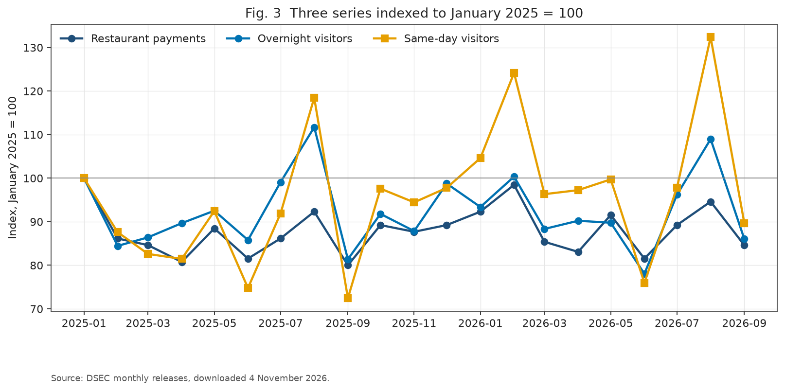

Approach
I combined 21 months of public aggregate statistics, checked the merged time series and compared levels, year-on-year growth and month-to-month changes. The analysis includes correlations, exploratory regression and diagnostic checks.
Data science portfolio · CISC7204
I am CHEN RUXIN, developing practical skills in Python, data analysis and visualization. My work focuses on asking careful questions, documenting each step and communicating results without overstating what the data can show.
About me
I use Python to clean and combine data, explore relationships and create readable visual explanations. I am especially interested in translating an applied research question into an analysis whose assumptions, limitations and data sources are visible to the reader.
Featured semester project
Research question
Between January 2025 and September 2026, how were monthly overnight and same-day visitor arrivals associated with the electronic payment transaction value of restaurants and similar establishments in Macao?

Approach
I combined 21 months of public aggregate statistics, checked the merged time series and compared levels, year-on-year growth and month-to-month changes. The analysis includes correlations, exploratory regression and diagnostic checks.
Key finding
Restaurant electronic payments moved positively with both visitor groups. Level correlations were 0.815 for same-day arrivals and 0.730 for overnight arrivals. These results describe association, not causation.
Limitation
The sample is short, electronic payments exclude cash and include resident spending, and the two visitor groups move closely together. Their separate regression effects should therefore be interpreted cautiously.
Technical skills